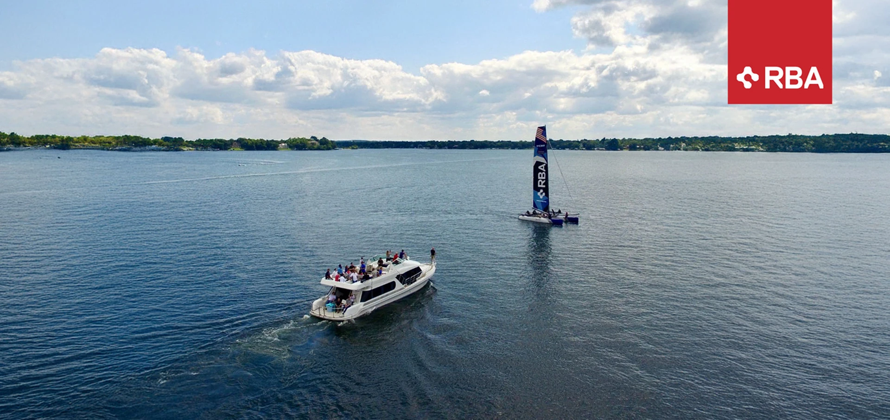
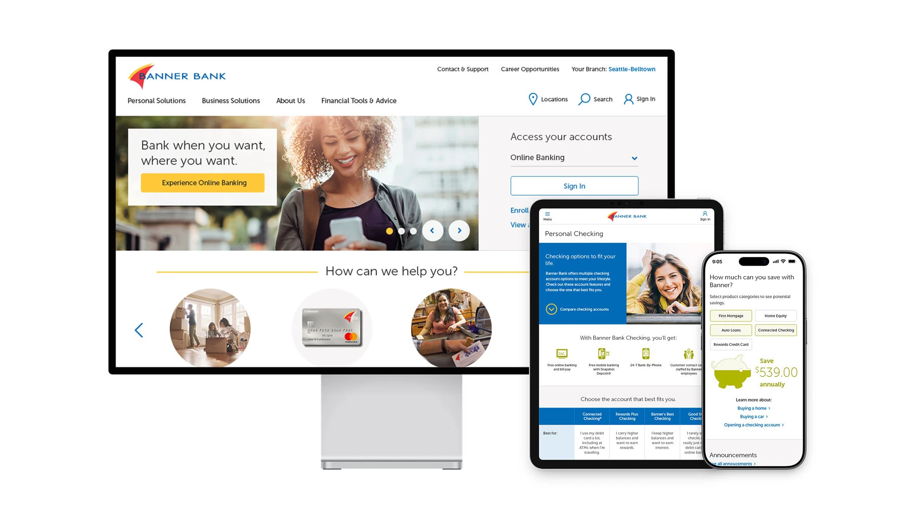
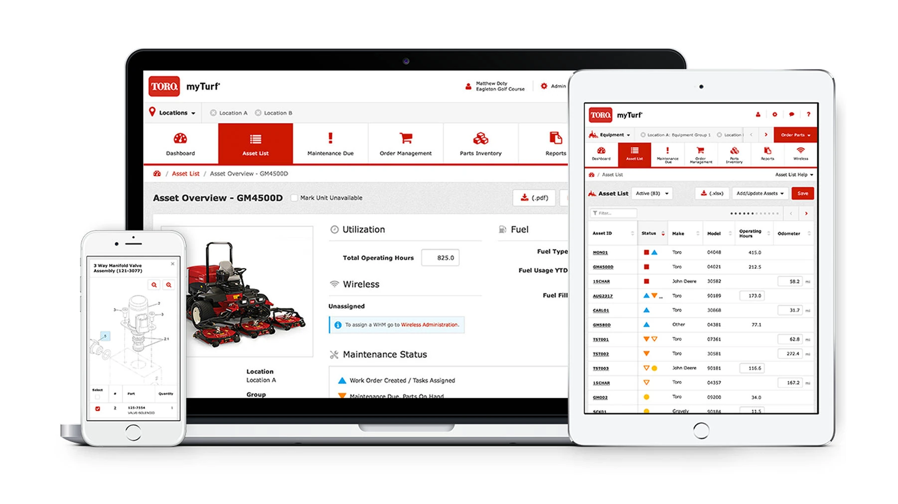
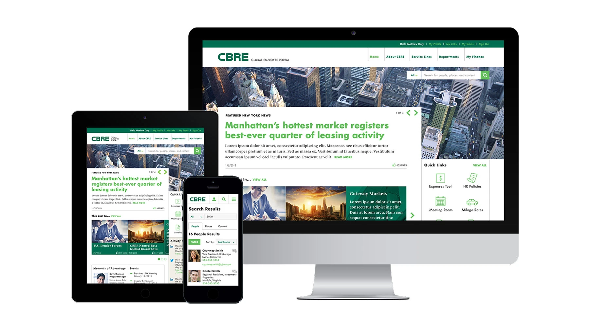
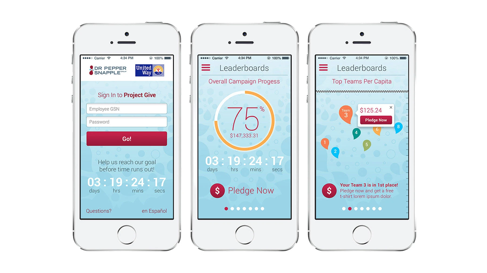
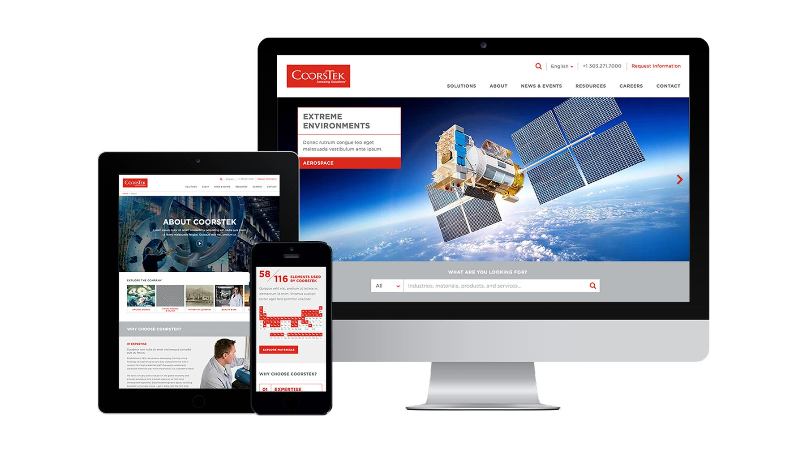
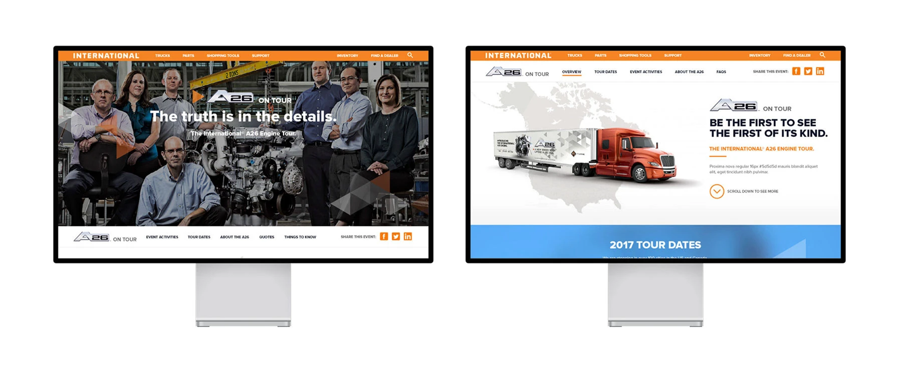

13 years as an enterprise design consultant (2013-2026)

Overview
For thirteen years, I built the digital front doors for big companies, turning a tangle of internal complexity into something the person on the other side of the screen could actually use.
Consulting is a high-wire act. You walk into a room where everyone speaks a different language. Marketing wants flash, IT wants security, and the users just want to get their work done. My job was to be the translator. To show them that good design wasn't just about making things pretty; it was about making things work. We had to make a real difference fast, without breaking what already worked.
The longest of those engagements went beyond project delivery. I built and operated a UX practice inside a global enterprise: the standards, the governance, the research, the measurement, the direction. It kept working after I left.
Project highlights
Banner Bank website

- Responsive redesign for a regional bank
- Simpler navigation so customers could find things
- Accessible financial tools and calculators
Toro myTurf equipment maintenance app

- Mobile-first maintenance tracking for field crews
- Real-time equipment status and alerts
- Still works out on the far end of the course, with no signal
CBRE global employee portal

- Unified intranet for 140,000+ global employees
- Personalized dashboard based on role and location
- Connected to the HR and productivity tools people already used
Dr Pepper Snapple Group United Way fundraising app

- A donation experience that felt more like a game
- Real-time fundraising progress tracking
- Sharing tools so donors could bring in more donors
CoorsTek website

- Global corporate presence for advanced ceramics
- Product catalog with complex filtering
- Multi-language support for international markets
International Trucks website

- Configurator tool for custom truck builds
- Dealer locator with inventory integration
- A content strategy the team could keep up with
Mortenson Construction team member portal
- Secure internal portal for construction teams
- Project document management and collaboration
- Safety reporting and compliance tools